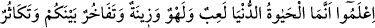
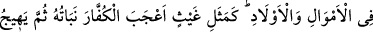
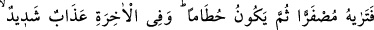
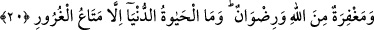
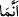

kitaplar Allah’ın sıfatları olduğu için sıfatlar yerine âyetler kelimesi kullanıldı. Yine
peygamberler, esmâ-i hüsnânın ve yüce sıfatların zuhûr yerleri oldukları ve onlara
değişik durum ve görünümler anlatıldığı için Allah’ın sıfatlarıdır. Ancak onların kemâl
ile zuhûr etmeleri farklılıklar gösterir.
Peygamberleri ve mûcizelerini yalanlamak korkutulmayı gerektiren bir sebep olunca,
evliyâ ve onların kerâmetlerini yalanlamak da bunun gibidir. Çünkü ilmiyle âmil olan
âlimler, nebîlerin ve rasûllerin vârisleridir. Evliyânın kerametlerinden kasıd, ilmî ve
kevnî kerâmetlerdir. Bu sebeple evliyânın muâsırı olsun veya olmasın onları tasdik
edenler nîmetlere nâil olacak adamlardır, Onları yalanlayanlar ise cehennem
adamlarıdır. Bu âyetler, kerâmetler ve onların dostlarının kıyâmete kadar ardı arkası
kesilmeyecektir. Velâyet kapısı açıktır. Allah’tan Peygamber (s.a.) ve ehlinin hürmetine
keremini tamamlamasını dileriz.
20. Bilin ki dünya hayatı ancak bir oyun, eğlence, bir süs, aranızda bir övünme ve
daha çok mal ve evlât sâhibi olma isteğinden ibarettir. Tıpkı bir yağmur gibidir ki,
bitirdiği çiftçilerin hoşuna gider. Sonra kurur da sen onun sapsarı olduğunu
görürsün; sonra da çer çöp olur. Âhirette ise çetin bir azap vardır. Yine orada
Allah’ın mağfireti ve rızâsı vardır. Dünya hayatı aldatıcı bir geçimlikten başka bir
şey değildir.
“Bilin ki” anlayınız, biliniz ki, “dünya hayatı ancak” buradaki hayat kelimesi zînet
için zâid olup, muzâf olan umûr kelimesi hazf edilmiştir. Aslında umûrü’d-dünyâ/dünya
işleri kasd edilmektedir. Lüzûm alâkasıyla dünya hayatının işlerinden mecâz olarak
kullanılması da mümkündür.
Keşfü’l-esrâr adlı eserde dünya hayatı için, ilk evde yakın hayat bu dünya hayatı
denilmiştir. Âyetteki’da bulunan sıla olup, bu dünyadaki hayat kasdedilmiştir.
Böyle olunca, ölümden önceki her hal dünya, ölümden sonraki haller ise âhirettir.
“Bir oyun,” yâni hiçbir faydası olmayan oyunlar oynayan kişiyi azarlar mâhiyette
şöyle denilmiş oluyor: Birbirinize tâbî olduğunuz bâtıl bir amelden ibârettir.
Dünya malı çocukları kandıran bir oyuncak
Bir insan akılsız olursa bağlanır ona ancak